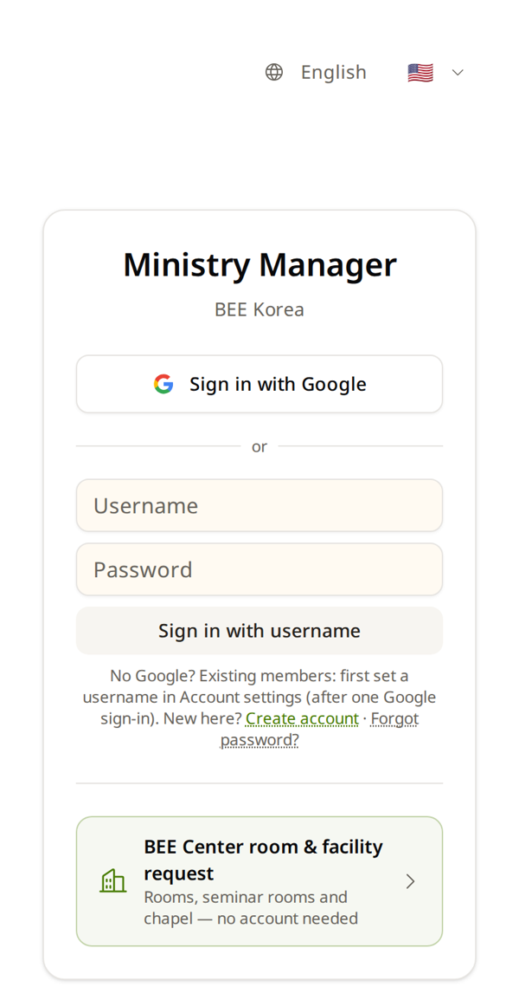

Draft for review — wording not yet checked against every screen.시안 — 화면 글자 전수 대조 전. 영어가 학생 화면, 한국어는 검토용.
Your first day처음 쓰는 날
From the link to your own name on the screen — about 10 minutes.링크를 받은 순간부터 화면에 내 이름이 보일 때까지 — 10분쯤.
▶ Start here따라 하기
Grace's facilitator sent her a link: ministry.beekorea.org. Do what Grace does, one step at a time.그레이스는 인도자에게서 링크 하나를 받았습니다: ministry.beekorea.org. 그레이스가 하는 대로 한 단계씩 따라 하세요.
- 1
Open the link링크 열기
Grace taps the link on her phone.그레이스가 폰에서 링크를 누릅니다.
It opens in Chrome (Android) or Safari (iPhone). This is the sign-in page.Chrome(안드로이드)이나 Safari(아이폰)에서 열립니다. 로그인 화면입니다.

✔ You see “Ministry Manager · BEE Korea”.✔ 「Ministry Manager · BEE Korea」가 보이면 됩니다.
- 2
Choose your way in어느 길로 들어가나
There are three ways. Grace looks for the line that is true for her.들어가는 길이 셋입니다. 그레이스는 자기에게 맞는 줄을 찾습니다.
BEE already has your Gmail (most facilitators and leaders)BEE 가 내 Gmail 을 이미 알고 있다 (대부분의 인도자·리더) Sign in with Google Your facilitator made a username for you in class인도자가 수업에서 아이디를 만들어 줬다 Username + Password →아이디 + 비밀번호 → Sign in with username You are new and have no Gmail처음이고 Gmail 이 없다 Create account (under the boxes)(입력칸 아래) ⚠️ Never type your Gmail into the Username box. That box is only for usernames made in Ministry Manager.⚠️ Username(아이디) 칸에 Gmail 을 넣지 마세요. Ministry Manager 에서 만든 아이디 전용입니다.
- 3
First time with Google: “Welcome 👋”Google 로 처음 들어오면: 「Welcome 👋」
Grace is new to BEE. After Google, she sees “Welcome 👋” with two choices.그레이스는 BEE 가 처음입니다. Google 로 들어오자 「Welcome 👋」와 두 가지 선택이 보입니다.
New to BEE → I'm new → name → gender and birth date → Where do you live? → contact → Review → register.BEE 가 처음 → I'm new(처음이에요) → 이름 → 성별·생년월일 → Where do you live?(어디 사세요?) → 연락처 → Review(확인) → 등록.
⚠️ BEE already registered you, but you see this screen? Do not tap “I'm new” — you would become two people. Tap Sign in with a different Google account and use the Gmail you gave BEE.⚠️ BEE 에 이미 등록됐는데 이 화면이 나오면 「I'm new」를 누르지 마세요 — 같은 사람이 둘이 됩니다. Sign in with a different Google account(다른 구글 계정으로 로그인)를 누르고 BEE 에 알려 준 Gmail 로 들어갑니다.
⚠️ Where do you live? — the country you really live in. Your requests go to the BEE leader of that country.⚠️ Where do you live? — 실제로 사는 나라. 내 신청이 그 나라 BEE 담당자에게 갑니다.
- 4
Your home page내 첫 화면
Grace sees her own name at the top. She is in.그레이스는 맨 위에서 자기 이름을 봅니다. 들어왔습니다.
Big tiles are the doors: Academy (classes, my courses, textbooks) · Ministry (people, seminars, places) · Finance (seminar money) · Applications & Reports (monthly report, requests). You see only the doors you need — that is normal.큰 타일이 문입니다: Academy(수업·내 수강·학습서) · Ministry(사람·세미나·장소) · Finance(세미나 돈) · Applications & Reports(월 보고·신청). 내게 필요한 문만 보입니다 — 정상입니다.
Lost? ☰ (top left) → ← Home.길을 잃으면 ☰(왼쪽 위) → ← Home.

- 5
Check your name and phone내 이름과 전화번호 확인
Grace's diploma will print her name exactly as it is here.그레이스의 수료증에는 여기 적힌 이름이 그대로 찍힙니다.
Tap your name at the top → My profile (name, phone, country). Name as on your ID card? Phone right? Wrong → Edit → fix → Save.맨 위 내 이름 → My profile (name, phone, country). 이름이 신분증과 같나? 전화번호가 맞나? 틀리면 Edit → 고치기 → Save.

✔ Done: your own name at the top, and your profile is right.✔ 끝: 맨 위에 내 이름, 프로필이 맞으면 됩니다.
❓ How do I…이럴 땐 이렇게
…change the language?…언어를 바꾸려면?
- Tap the globe button with a flag (home page, or top right of the sign-in page).국기가 있는 지구 단추를 누릅니다(홈, 또는 로그인 화면 오른쪽 위).
- Pick English or Kiswahili. This phone remembers it.English 나 Kiswahili 를 고릅니다. 이 폰이 기억합니다.
Names of people and seminars stay as they were typed — only menus and buttons change.사람·세미나 이름은 적은 그대로 — 메뉴와 단추만 바뀝니다.

…put it on my home screen like an app?…앱처럼 홈 화면에 두려면?
- Android (Chrome): ⋮ → Install app (or “Add to Home screen”)(또는 「홈 화면에 추가」)
- iPhone (Safari): Share ⬆ → Add to Home Screen → Add
A “Ministry” icon appears. Nothing big is downloaded — it is the same website.「Ministry」 아이콘이 생깁니다. 큰 것을 받지 않습니다 — 같은 웹사이트입니다.
…sign in without Google?…Google 없이 로그인하려면?
- Already a member: sign in with Google once → Account settings → Username & Password Login → make one. Next time, use Sign in with username.이미 회원: Google 로 한 번 들어와 Account settings(계정 설정) → Username & Password Login → 만들기. 다음부터 Sign in with username.
- New: Create account on the sign-in page → your email → the 6-digit code we email you.처음: 로그인 화면 Create account → 이메일 → 메일로 온 6자리 코드.
…get back when I'm lost?…길을 잃었을 때 돌아가려면?
☰ → ← Home. The phone's back button also works — but an app on iPhone has none, so use ☰.폰의 뒤로 단추도 됩니다 — 아이폰에 설치한 앱에는 없으니 ☰ 를 씁니다.
🆘 I'm stuck막혔어요
“Incorrect username or password.”「아이디 또는 비밀번호가 올바르지 않습니다.」
- Did you type your Gmail? Use Sign in with Google instead.Gmail 을 넣었나요? 대신 Sign in with Google.
- Your facilitator made your username? Ask them for a New password — they can make one in the seminar room.인도자가 만든 아이디인가요? 인도자에게 New password(새 비밀번호)를 부탁하세요 — 수강실에서 만들어 줍니다.
I see “Welcome 👋”, but I already have an account「Welcome 👋」가 나오는데 나는 이미 계정이 있어요
You came in with a different Gmail from the one BEE has. Tap Sign in with a different Google account. Not sure which Gmail? I'm already registered → find and link your account (the office approves it).BEE 가 아는 것과 다른 Gmail 로 들어왔습니다. Sign in with a different Google account. 어느 Gmail 인지 모르겠으면 I'm already registered(이미 등록되어 있어요) → 내 계정 찾아 잇기(본부가 승인).
I forgot my password비밀번호를 잊었어요
- Gmail account: no password needed — Sign in with Google.Gmail 계정: 비밀번호 필요 없음 — Sign in with Google.
- Username with an email: Forgot password? on the sign-in page.이메일이 있는 아이디: 로그인 화면 Forgot password?
- Username made in class (no email): ask your facilitator for a New password.수업에서 만든 아이디(이메일 없음): 인도자에게 New password.
I have a new phone폰을 바꿨어요
Sign in the same way as before. Everything is saved in your account, not on the phone.전과 같은 방법으로 로그인하세요. 모든 것은 폰이 아니라 내 계정에 저장돼 있습니다.
I cannot change my country or email나라나 이메일을 못 바꿔요
That is on purpose — your country decides who approves your requests, and your email is your key. Ask your coordinator.일부러 막아 둔 것입니다 — 나라가 내 신청을 누가 승인할지 정하고, 이메일은 로그인 열쇠입니다. 코디에게 부탁하세요.
Nothing found — try another word, or open “I'm stuck”.찾는 것이 없습니다 — 다른 낱말로, 또는 「막혔어요」를 여세요.